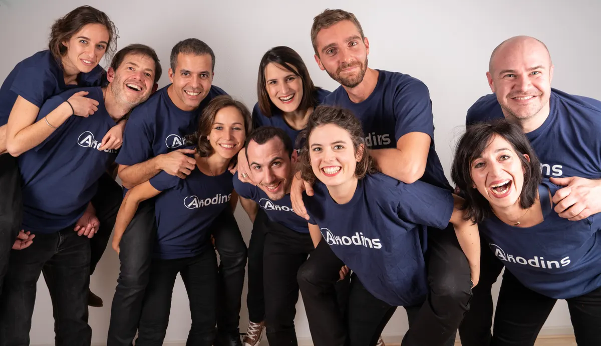

1987 → aujourd’huiJournalisme · improvisation · formation
Un parcours singulier
Ce parcours, je ne l’avais pas planifié, mais aujourd’hui je vois qu’il tendait vers un seul but : être prêt pour vous accompagner.
Trois lignes, un même fil
Animateur : une spécialisation journalistique

Animateur modérateur d’événements
Strasbourg · micro-entreprise
Stage « Présentation de flashs et de JT »
Centre de Formation des Journalistes · Paris
Reporter rédacteur à France 3 Lorraine
Nancy
Je travaillais pour les JT régionaux, ainsi que pour les locales de Nancy et de Metz, que je présentais régulièrement. J’ai également officié comme chef d’édition.
Stage « Initiation au journalisme télévisé »
Centre de Formation des Journalistes · Paris
Rédacteur localier à La Liberté de l’Est
Saint-Dié
Journaliste polyvalent, je traitais l’actualité locale de l’arrondissement de Saint-Dié sous toutes ses facettes. Responsable des sports du secteur, je supervisais les pages de la rubrique sportive et une vingtaine de correspondants et pigistes.
Cours « Journalisme radio et animation »
European Broadcasting School · Rueil-Malmaison
Le théâtre d’improvisation : une passion de 20 ans

Coach des UP’rovisateurs
Université Populaire Européenne · Strasbourg
Je dirige deux ateliers hebdomadaires d’improvisation : l’un pour les débutants et les néophytes, l’autre pour les confirmés.
Membre des Anodins
Strasbourg
Je suis l’un des douze improvisateurs de la troupe des Anodins, créée à Strasbourg en 2012. La saison dernière, nous avons proposé une quinzaine de spectacles en Alsace et dans les Vosges. chiffres de 2022 à actualiser
Coach à la LOLITA
Strasbourg
Je codirigeais chaque saison une des équipes de la principale association d’improvisation théâtrale de Strasbourg, dans sa section « Joute libre ».
Membre d’ImproDisiaque
Nancy
D’abord seulement improvisateur, j’ai intégré le pôle de formateurs de la principale association d’improvisation théâtrale à Nancy.
De la formation au coaching personnel

Diplôme d’école « Coach professionnel »
Institut de Coaching d’Alsace · Osthouse
Professeur d’éducomédias
Université Populaire Européenne · Strasbourg
Formateur en éducation civique
Office Français de l’Immigration · Strasbourg
Formateur bénévole en Français Langue Étrangère
Association Contact et promotion · Strasbourg
Formateur en entreprise, langue française
Société Méthodia Formation · Strasbourg
Formation « Animation de débats »
Association Les Petits Débrouillards · Nancy
Certificat de compétence « Exercer la mission de formateur en entreprise »
CCI Meurthe-et-Moselle · Nancy
Animateur d’ateliers scientifiques et de psycho-sociologie
Association Les Petits Débrouillards · Strasbourg
La route
Les étapes, sur la carte
Rueil-Malmaison pour apprendre, Saint-Dié pour la presse locale, Nancy et Metz pour la télévision, Strasbourg pour la scène, la formation et le coaching.
Me contacter →